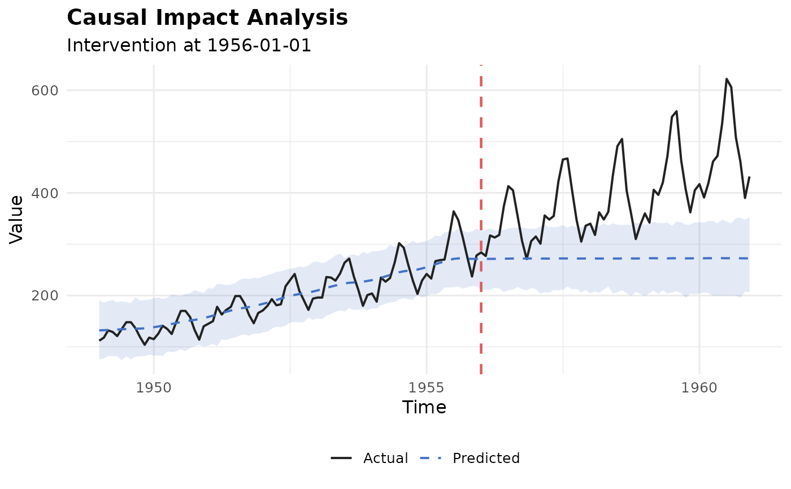

Fits a Bayesian structural time-series model on the pre-intervention period
of series and extrapolates it as the counterfactual for the
post-intervention period. The difference between actual and counterfactual
estimates the causal effect.
Arguments
- series
A
MiltSeriesobject (univariate).- event_time
The time at which the intervention occurred. Must be a value present in
series$times(). The pre-period is everything strictly beforeevent_time; the post-period isevent_timeonwards.- covariates
Optional
MiltSeriesobject (or numeric matrix with the same number of rows asseries) providing control covariates. Passed toCausalImpactas additional columns in the data matrix.- n_seasons
Integer. Number of seasons for the seasonal component.
0L(default) disables seasonality.- ...
Additional arguments forwarded to
CausalImpact::CausalImpact().
See also
Other anomaly:
milt_changepoints(),
milt_detect(),
milt_detector()
Examples
# \donttest{
s <- milt_series(AirPassengers)
ci <- milt_causal_impact(s, event_time = as.Date("1956-01-01"))
plot(ci)
#> Warning: A <numeric> value was passed to a Date scale.
#> ℹ The value was converted to a <Date> object.

# }